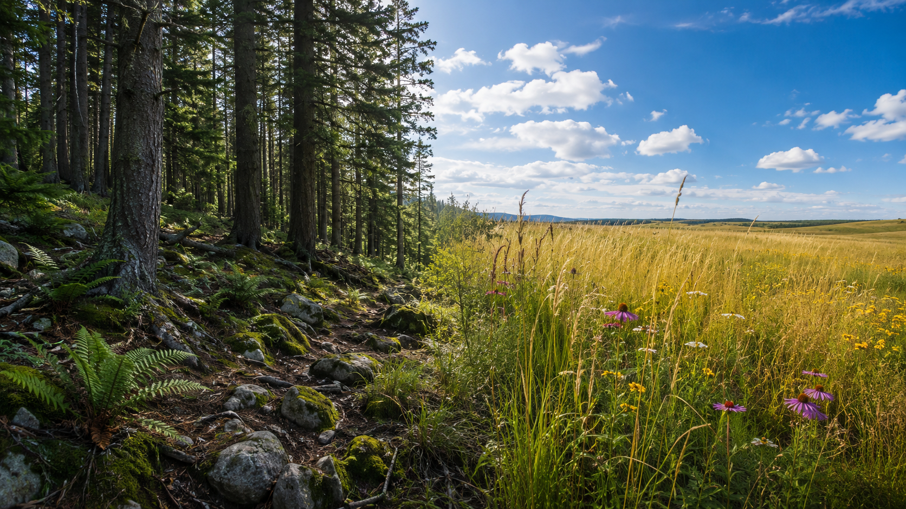

Keep this question in your mind as you work. By the end, you'll be able to answer it with real evidence.
Look at the photo on the Lesson tab. On one side, trees shade the rocky ground. On the other, grasses grow tall in open sunlight. Two very different worlds — right next to each other.
In your notebook, write down two things you notice about the plants on each side. Then write one question you're wondering about.
These words will help you think and talk like a scientist today. Tap each card to flip it and read the definition.
Copy this sentence carefully into your science notebook:
"A plant's traits are shaped by its environment — each one is a solution to a problem."

A mountain forest and an open grassland are completely different places to live. In a forestforest environmentShaded, cool, moist, often with rocky soil and limited direct sunlight., trees block much of the sunlight. The soil is rocky and stays damp. It can get very cold.
Out in a grasslandgrassland environmentOpen, sunny, sometimes windy, with deep rich soil that can dry out during dry seasons., sunlight is everywhere. Wind blows steadily. Rain comes and goes, and the soil can dry out for weeks.
A fern growing on the shady forest floor has wide, flat fronds. Those broad leaves catch every bit of light that filters through the trees. That trait is a solution to the problem of shade.
A prairie grass has thin, tough leaves and roots that go deep — sometimes deeper than you are tall. That root system is a solution to dry seasons. It can reach water far underground when the surface dries out.
A trait gives an advantageadvantageA trait that helps a plant survive or reproduce better than others in the same environment. when it solves a problem in that specific place. Deep roots are an advantage in a dry grassland. They are far less useful in a wet forest where water is already near the surface.
Real-World Connection: Scientists compare plants across different habitats to figure out which traits helped certain plants survive over many generations — and which traits got passed on.
A trait is an adaptation when it gives a plant a survival advantage in its specific environment. The same trait that helps a plant thrive in one place may be useless — or even harmful — somewhere else.
Different environments create different pressures. Plants with traits that match those pressures survive. Plants without them often don't.
Curious? Go Deeper
Why do scientists care so much about plant traits? When scientists notice that certain plants survive in harsh environments, they want to know why. The answer is almost always a trait — something in the plant's structure that matches the challenge it faces.
Over many, many generations, plants with helpful traits tended to survive and make seeds. Those seeds grew into plants with the same traits. Plants without those traits often died before they could reproduce. That's why, over a very long time, the plants we see in each environment look the way they do. Their traits are not accidents. They are a record of what worked.
You'll need: Your science notebook, pencil, colored pencils, and a ruler. You'll be observing, drawing, and building a comparison chart — no extra materials needed.
Work through each step in order. Write and draw directly in your science notebook as you go.
Look at the photo and diagram. Study the forest and grassland plants carefully. Write down at least two traits you notice on each side. Use words like leaf shape, leaf size, stem thickness, or root depth.
Create a comparison chart. Draw a two-column chart with the headings: Mountain Forest Plant and Grassland Plant. Choose one plant from each side — pine tree or fern for the forest; prairie grass or wildflower for the grassland.
Draw and label each plant. Draw your chosen forest plant and grassland plant side by side. Label at least three traits on each one. Use arrows and short descriptions — not just trait names.
Build an adaptation chart. Add a second chart below your drawings with four columns: Plant | Trait | Environmental Challenge | Survival Advantage. Fill in at least two rows for each plant.
Compare one trait from each plant. Pick one trait from the forest plant and one from the grassland plant. In a sentence or two, explain why each trait works well in its own environment — but wouldn't be as helpful in the other.
In your science notebook, answer each of these questions. Use specific details — say which plant and which trait you're talking about.
Tell the full story of today's investigation — what you looked at, what you noticed, what you figured out, and what question you still have. Use your charts and drawings to help.
Think through each question on your own first. Write your answer in your notebook before moving on.
🔍 Part A — Label & Identify
Use your investigation notes and drawings to answer each item below.
🚀 Part B — Short Answer
Answer each question in complete sentences. Use your vocabulary words.
Why wouldn't a wide-leafed forest fern survive as well if it were moved to an open grassland?
What do you think?
💡 Start with: "I think the fern would struggle because…"
What did you observe or learn that supports your thinking?
💡 Start with: "In my investigation, I noticed that…"
Why does that make sense?
💡 Start with: "This makes sense because a trait only gives an advantage when…"
📚 Try to use at least one of these words: adaptation, trait, advantage, environment
🎨 Part C — Draw & Label
Draw your forest plant and grassland plant side by side. Label at least 3 traits on each one. Below each drawing, write one sentence describing its biggest survival advantage.
Submit your work on Canvas using one of these options:
Make sure your submission includes all of these: